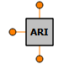

| s_in_1 | PORTS_LIB.analog_signal | (n = n) | IN | Inlet signal | |
| s_in_2 | PORTS_LIB.analog_signal | (n = n) | IN | Inlet signal | |
| s_out | PORTS_LIB.analog_signal | (n = n) | OUT | Outlet signal |
| A | REAL | 1 | Scaler for ARI gain calculation | - | |
| ADL | REAL | 25 | ARI limit due to aileron defection | deg | |
| B | REAL | 0 | Adder for ARI gain calculation | - |
| n | 1 |
| K_ARI | REAL | ARI gain | - | ||
| u | REAL | limited input signal | rad |
Document generated automatically (Date: 2019:01:23, Time: 00:19:17)